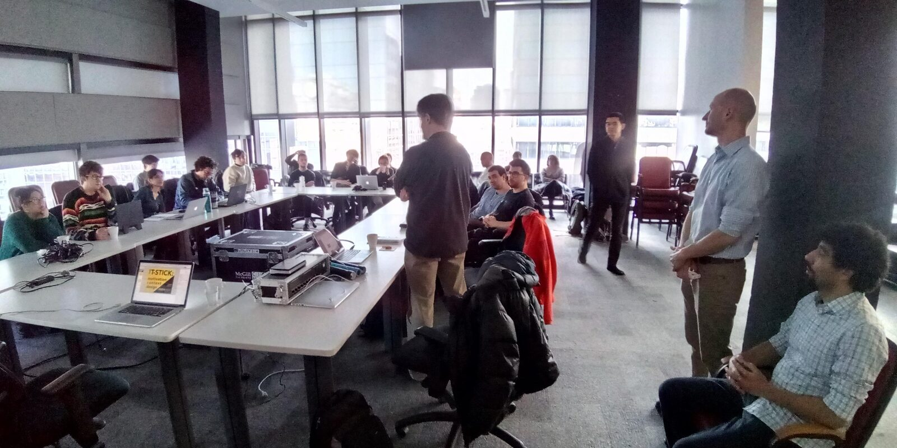
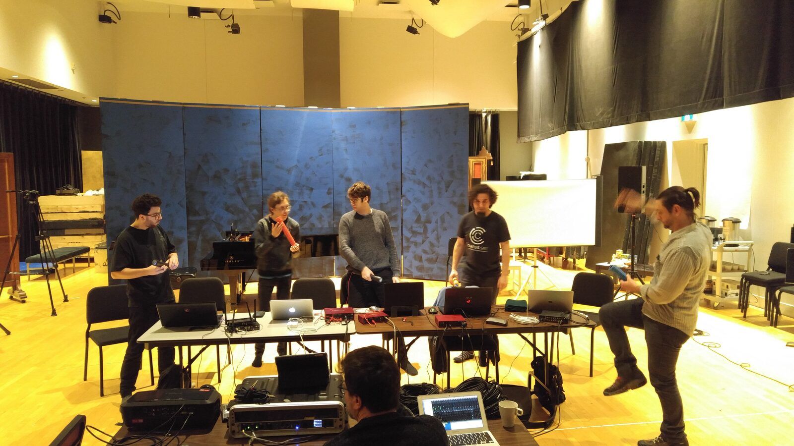
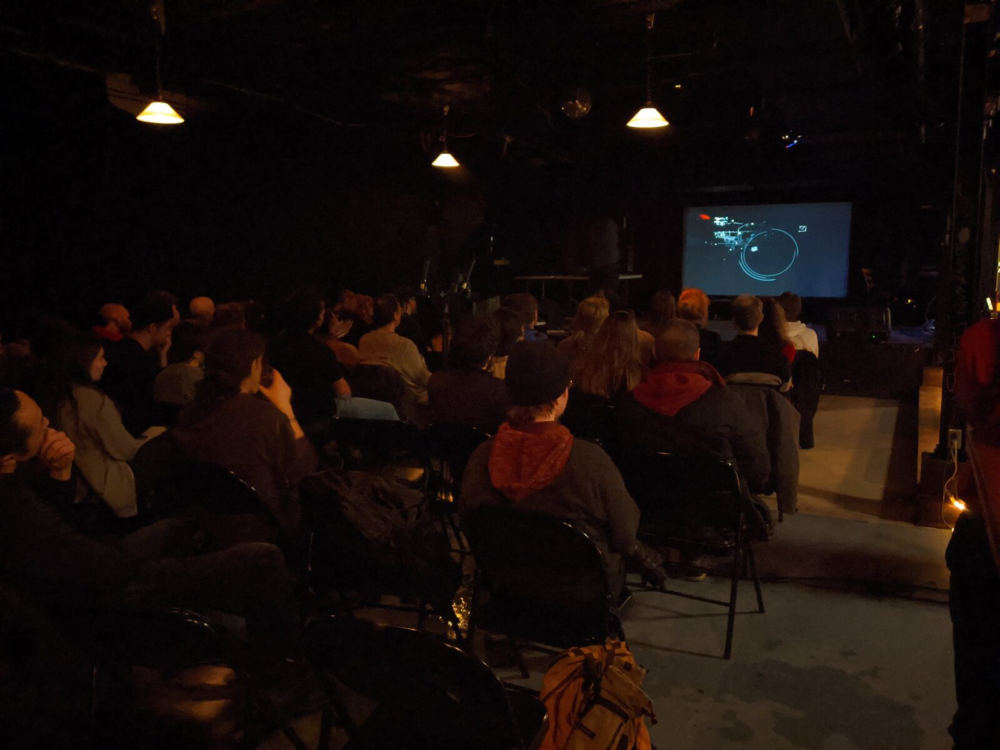

The T-Stick Music Creation Project: An approach to building a creative community around a DMI
Abstract
To tackle digital musical instrument (DMI) longevity and the problem of the second performer, we proposed the T-Stick Music Creation Project, a series of musical commissions along with workshops, mentorship, and technical support, meant to foment composition and performance using the T-Stick and provide an opportunity to improve technical and pedagogical support for the instrument. Based on the project’s outcomes, we describe three main contributions: our approach; the artistic works produced; and analysis of these works demonstrating the T-Stick as actuator, modulator, and data provider.
Author Keywords
T-Stick, idiomatic music, longevity, DMI
CCS Concepts
•Applied computing → Sound and music computing; Performing arts;
Introduction
There has been an increasing interest in the longevity of new musical instruments around the NIME community. McPherson and Kim tackle longevity while stating the problem of the second performer: the life of a new musical instrument often ends with the absence of other performers than its inventor/designer [1]. Their argument strikes the importance of establishing a larger community of performers and composers for an instrument's sustainable life. Similarly, Meneses et al. hypothesize that a new instrument is more likely to survive when a repertoire demands its use [2]. Vasquez et al. point out a co-development of new instruments and repertoire that is idiomatic to the instruments (e.g., the Theremin) [3].
These examples suggest that an expanded repertoire of idiomatic writing for a new musical instrument is critical in achieving its long-term survival. Despite these compelling arguments, there has been limited effort to increase the number of idiomatic compositions in the NIME community.
The T-Stick Music Creation Project (TMCP) was conceived to contribute to the T-Stick's longevity by commissioning five new works for the instrument.
The T-Stick is a cylindrical musical interface composed of accelerometers, pressure, piezoelectric, and capacitive sensors combined with computer programs for gesture acquisition [4]. T-Sticks are designed to sense not only raw data from sensors such as angle and acceleration but also to extract features related to gestures such as squeezing, brushing, and sweeping from the raw data [5]. Those gestures are idiomatic to the T-Stick; they were developed according to the interface’s perceived affordances and constraints through compositional and performance practices.
Although several idiomatic gestures had already been identified before the TMCP launched, the usage of these gestures between different compositions was still limited. Moreover, different composers and performers may have different sets of gestures. In order to advance from development [5], initial usage [6], and replication [7] to the widespread usage of a common instrumental technique, we envisioned building a broader community of T-Stick composers and performers. The TMCP is an approach to establish a creative cycle in which composers, performers, and developers cooperate to build new repertoire and instrumental techniques idiomatic to the T-Stick.
Our observation indicates three factors that hinder the widespread usage of the T-Stick:
1) The T-Stick has been accessible primarily within academic institutes such as the Fab Lab in Barcelona, Dalhousie University in Halifax, the University of Lethbridge in Alberta, and the Input Devices and Music Interaction Laboratory (IDMIL), where the T-Stick has been developed. The T-Stick has seldom been out of academia as in the 2010 T-Stick Composition Workshops [8].
2) There have been limited educational resources on how to perform with the instrument. Materials available were only documentation about the technical specifications and gesture acquisition programs, but no documentation about how to play the instrument with those programs. In addition, there has been no course in which an instructor transmits previously acquired playing techniques to attendees.
3) There is a high technological demand to handle the instrument. Although the T-Stick documentation contains a dedicated software that presents the raw sensor data, this patch does not provide any information on the instrument's idiomatic gestures. T-Stick composers have implemented algorithms extracting such gestures in personal patches to perform specific musical works, rather than using a shared universal implementation.
The TMCP was launched in order to address these challenges specifically. By sending a call for compositions to the general community, the project organizers hoped to make the T-Stick more accessible outside academia. The selected composers received mentorship from an experienced T-Stick composer: D. Andrew Stewart, to complement the limited learning resources. Stewart is a composer/performer with extensive experience with the T-Stick. The T-Stick's designer, Joseph Malloch, along with the project's organizers, provided technical support.
During the TMCP, five composers have created four musical compositions and one installation work for the T-Stick. The project culminated with a concert showcasing these new works. The expectation is that the composer’s engagement with the instrument will foment an interest and expand the community surrounding the T-Stick.
Furthermore, based on feedback gathered from composers during the project, the authors were also able to push forward the T-Stick's technical development. We will describe the technical challenges faced by composers and a new version of the T-Stick designed to reduce these restrictions.
The following section describes the project's process and introduces how the problems surrounding longevity have been addressed.
The T-Stick Music Creation Project
The TMCP was launched with an announcement of a call for composers through various media channels on the internet, such as Composer’s Site, Facebook, and mailing lists within several local academic institutes. The authors have intended to reach out to composers inside and outside academia to address the problem of inaccessibility often tied to academic DMIs.
The project received nine submissions, and five proposals were selected by a committee formed by D. Andrew Stewart, Joseph Malloch, and the project authors. The selected proposals presented both a strong artistic relevance and a clear plan to explore T-Stick-specific affordances and constraints. The selected creators are Erich Barganier, Michał Seta, Vincent Cusson, Kasey Pocius, and Macroplasm (Diego Bermudez Chamberland & Yanik Tremblay-Simard), out of which only one composer had previous contact with the T-Stick and half of which were not affiliated with an academic institution at the time of the project.
Following the selection process, the organizers offered the first workshop on the T-Stick at McGill University on November 16, 2019. This workshop was the official launch of the TMCP from the composer's point of view. However, it was also an event open to the artistic community at large, providing a learning opportunity and first contact with DMIs to the general public. The two mentors presented technical and historical aspects of the instrument and compositional and performance strategies. During this workshop, the composers built an environment for T-Stick exploration using their computers, installing patches programmed in both Pure Data and Max/MSP. These patches allowed the workshop participants to access the sensor data, test the established T-Stick techniques, and interface with sound using a simple sound generator. The workshop ended with private meetings in which the TMCP composers could brainstorm their ideas and receive feedback from the mentors regarding each proposal's creativity and viability.


First Workshop on the T-Stick, McGill University, November 16, 2019.
After the first workshop, the collaborating composers received T-Sticks, keeping the instruments during the remainder of the project. The composers started to work on their proposed pieces with an extensive exploration of the interface's possibilities. To support the composition process, two online meetings were provided by D. Andrew Stewart for artistic consultation, and Joseph Malloch gave one in-person meeting for technical support and first feedback on the T-Stick usage. Both mentors were also available by email for consultations.
Following the individual working period, a second workshop was held at McGill University on February 9, 2020, exclusively for the TMCP participants and provided them with an opportunity to show D. Andrew Stewart their work in progress in a simulated concert setting. Every participant brought works nearing completion and polished them according to Stewart’s feedback, honing their T-Stick composition and performance practices.


Second T-Stick workshop, exclusive to the composers collaborating on the T-Stick Music-creation Project. McGill University, February 9, 2020.
Finally, the project culminated with a concert event on February 11, 2020, at La Vitrola in Montreal. The concert showcased four new T-Stick compositions, a new T-Stick installation piece, and a group improvisation with all six composers and D. Andrew Stewart. The concert had two essential aspects: Dissemination of the new T-Stick repertoire and usability test of both the T-Stick and the composers’ algorithms and specific configurations in the practical concert setting.


T-Stick concert. February 11, 2020, La Vitrola (Montreal, Canada)
At the end of the project, the TMCP composers were invited to give their feedback as T-Stick users in presentation and oral report forms. The presentation was made at McGill University on February 24, 2020, and the reports were collected at the IDMIL on March 4, 2020. We discuss the feedback and the compositional information provided in the following sections.
The project contributed to the community building through the series of workshops, mentorship, the concert event and the composers’ presentations. While the workshops and mentorship lowered the entry resistance to use the T-Stick, the creation of the works for the concert by the composers enhanced the diversity of the repertoire for the instrument. Moreover, through the composers’ presentations and the following feedback, their compositional approaches and challenges in the process of the creation were shared with the instrument’s developers. The knowledge sharing fostered the sense of community even further.
Expanded repertoire
The project resulted in five new works constituting four musical compositions and one installation. The feedback provided by the composers and an analysis of the five works revealed that the composers uniquely used and even expanded the idiomatic gesture vocabulary in various media settings. Our study identified an impact of these idiomatic gestures on the interface’s affordance/constraint as well as the diversification of the role of the T-Stick, which can be classified into the following three categories: an actuator, a modulator and a data provider.
We identify a T-Stick as an actuator when the T-Stick acts as a controller for a sound synthesizer. This role allows a T-Stick to trigger and continuously manipulate a synthesis unit.
We identify a T-Stick as a modulator when the T-Stick acts as a controller for an effect modifier that alters a sound stream from a synthesis unit controlled by other devices than the T-Stick. In this role, the interaction with the instrument intervenes and alters an existing audio signal stream.
Finally, we identify a T-Stick as a data provider when the T-Stick is used as a data generator rather than a controller. In this case, neither the composer nor performer directly determines how the T-Stick data is interpreted; instead, the data is made available to other networked music participants who then determine how the data should be used.
The following part of this section discusses the variety in approach to composing for T-Stick and which type of role a T-Stick played in each piece.
The taxidermy of negative space
This piece was composed for T-Stick, video, and dancer by Erich Barganier. The performance consisted of a dancer using the T-Stick to control sound generators and the composer's choice of sound sources for granular synthesizers, which evoke physiological feelings such as kid's voices and a male voice. This piece can be interpreted as an expansion of the T-Stick's theatrical aspect based upon the idiomatic gestures that its interface’s affordance/constraint allows the dancer to act.
The instrument determines whether and how the synthesis units should generate sounds. Thus, we identify the role of the T-Stick as an actuator.
Memoidalaube
This piece was composed for T-Stick and audiovisual projection by Michał Seta. This piece was designed as a gamified composition. The performer controls the T-Stick to navigate an avatar in a game world to invoke a desired audiovisual reaction from the game mechanics. The T-Stick played the role of not only a musical instrument but also a game controller.
Seta uses a roll gesture: a motion of the T-Stick rolling along the floor. The roll gesture takes advantage of the instrument's physical characteristics, i.e., the cylindrical form, light weightiness and wireless connectivity. The gesture is an example of interactions created for particular pieces, expanding the T-Stick's idiomatic gesture vocabulary.
For music-making, the piece calls for two performers to control one T-Stick. The T-Stick was connected to a synthesis unit in SuperCollider via the Godot game engine that does mapping and visualization based on the data stream from the T-Stick. The data from the T-Stick is then sent to SuperCollider. The T-Stick data determine the state of sound from the synthesis unit. Thus, we identify the role of T-Stick as an actuator.
Balance
Vincent Cusson created a sound installation where the visitor finds the instrument attached to a stand that allows only one degree of freedom: a single-dimensional rotation. The system uses a stepper motor (an early version of the Torque Tuner [9]) to provide resistance to movement and return the instrument to the rest position once the visitor stops applying force to the system. Cusson states that the form and the wireless connectivity of the T-Stick invite the audience to rotate the interface, and so, he mapped the spinning gesture with a timbre of the eight musical voices.
In this piece, the T-Stick is an interface to control a synthetic unit that generates sounds. The sound is produced according to how the audience rotates the T-Stick. Thus, we identify the T-Stick as an actuator.
Reflexion
This piece was composed for T-Stick and Theremin by the Macroplasm Duo (Diego Bermudez Chamberland & Yanik Tremblay-Simard).
Chamberland and Tremblay-Simard state that they have invented new idiomatic gestures as in tiny picking, smash the side and rolling up and down. The rolling up and down gesture modulated the audio stream from the Theremin, while other gestures were used to control the synthesis unit dedicated to the T-Stick. Reflexion is an example of complex gesture relations, with the T-Stick acting as both modulator and actuator.
Synthetic Icescapes
The piece was composed for T-Stick and six laptops (five laptop performers from the Concordia laptop orchestra–CLOrk–plus one external performer) by Kasey Pocius.
Pocius used existing idiomatic gestures inherited from D. Andrew Stewart, such as windmills, windows intervene, jab, and framing gestures.
A uniqueness of this piece is the relationship between a T-Stick and a laptop orchestra. While the T-Stick controls its dedicated synthesis unit, the T-Stick also shares gesture data with other networked orchestra members. The other orchestra members were free to map the data in any way they feel fit. We consider that this piece changed the context where the aforementioned existing idiomatic gestures were used from the performance setting in which the T-Stick is used as an actuator to that in which the instrument is used as a data provider.
The TMCP resulted in the diversification of the T-Stick repertoire. Our study identified the three different roles of the T-Stick (i.e., as an actuator, as a modulator and as a data provider) in five different media settings (e.g., using a video game engine, an art installation and a laptop orchestra). These works explored the use of established and new gestures and contributed to the diversification of the idiomatic writings in their T-Stick repertoire.
Future work
In addition to the contributions reported here, we have made important technical improvements to the T-Stick based on composers’ feedback during the project, including improved battery power feedback and embedding gesture analysis directly in the firmware. These enhancements improve the technical usability of the instrument as well as its cross-platform compatibility and generally reduce composers’ technical hurdles to using the instrument. Unfortunately, a full description of these contributions is left to future publications in order to fit the present publication format and word count.
Although embedded gesture extraction can help access the T-Stick gestural vocabulary, more purposeful pedagogical materials and studies to access learnability in DMIs are still needed. To this end, we plan to release a standardized learning package that includes documentation about how to play T-Stick combined with dedicated software that can generate sounds without the user’s effort to build a new computer program. This package is expected to lower the entry resistance for beginner players.
Some of the composers expressed the desire to keep the T-Sticks after the project's end to use in other activities and performances. The authors plan to support follow-up projects to maximize the long-term community impact of the TMCP.
Conclusion
T-Stick Music Creation Project was a practical approach to broaden a creative community around the T-Stick. The participating composers and the instrument developers have concerted to create new compositions and update the T-Stick instrument. The composers have worked to use the existing and discover new idiomatic gestures to create the expanded repertoires, resulting in creating five new pieces for the T-Stick. Those works demonstrate the use of the idiomatic gestures in different performance settings, expanding the T-Stick roles into three categories: actuator, modulator and data provider.
Addressing the needs reported by the TMCP participants, the T-Stick developers updated the T-Stick firmware, embedding a new gesture acquisition program that reports the idiomatic gestures along with the normalized data from the sensors, as well as tracking remaining battery power. Performers and composers can access the T-Stick gestural vocabulary directly from the instrument.
As a strategy for community building around a DMI, we propose to (1) embed the gesture extraction algorithms into the instrument for independence on a particular programming environment, (2) provide a standardized learning package including software and documentation that helps users experience instrumental playing techniques for lowering an entrance effort, and (3) foster a creative cycle in which composers and performers create artistic works, according to which developers update the instrument for longevity. We believe that these three propositions promote widespread use of the instrument and a community building around the DMI.
Acknowledgments
We acknowledge the CIRMMT, IDMIL and Nomura Foundation for their fabrication assistance and financial support for this project. We extend our gratitude to the participating composers in the TMCP for their compositions.
Citations
- ↩McPherson, A. P., & Kim, Y. E. (2012). The Problem of the Second Performer: Building a Community around an Augmented Piano. Comput. Music J., 36(4), 10–27. https://doi.org/10.1162/COMJ_a_00149
- ↩Meneses, E. A. L., Fukuda, T., & Wanderley, M. M. (2020). Expanding and Embedding a High-Level Gesture Vocabulary for Digital and Augmented Musical Instruments. In Human Interface and the Management of Information, HCII (Vol. 2, pp. 375–384). Springer International Publishing. https://doi.org/10.1007/978-3-030-50017-7_27
- ↩Vasquez, J., Tahiroğlu, K., & Kildal, J. (2017). Idiomatic Composition Practices for New Musical Instruments: Context, Background and Current Applications. In Proceedings of the International Conference on New Interfaces for Musical Expression (pp. 174–179). Copenhagen, Denmark: Aalborg University Copenhagen. https://doi.org/10.5281/zenodo.1181424
- ↩Malloch, J. W. (2008). A Consort of Gestural Musical Controllers: Design, Construction, and Performance.
- ↩Malloch, J., & Wanderley, M. M. (2007). The T-Stick : From Musical Interface to Musical Instrument. In Proceedings of the International Conference on New Interfaces for Musical Expression (pp. 66–69). New York City, NY, United States. https://doi.org/10.5281/zenodo.1177175
- ↩Stewart, A. (2010). Catching Air and the Superman.
- ↩Nieva, A., Wang, J., Malloch, J., & Wanderley, M. (2018). The T-Stick: Maintaining a 12 year-old Digital Musical Instrument. In T. M. Luke Dahl Douglas Bowman (Ed.), Proceedings of the International Conference on New Interfaces for Musical Expression (pp. 198–199). Blacksburg, Virginia, USA: Virginia Tech. https://doi.org/10.5281/zenodo.1302545
- ↩2010 T-Stick Composition Workshops. (2000). Retrieved from https://tcw2010.wordpress.com/
- ↩Kirkegaard, M. S., Bredholt, M., Frisson, C., & Wanderley, M. (2020). TorqueTuner: A self contained module for designing rotary haptic force feedback for digital musical instruments. In R. Michon & F. Schroeder (Eds.), Proceedings of the International Conference on New Interfaces for Musical Expression (pp. 273–278). Birmingham, UK: Birmingham City University. Retrieved from https://www.nime.org/proceedings/2020/nime2020_paper52.pdf